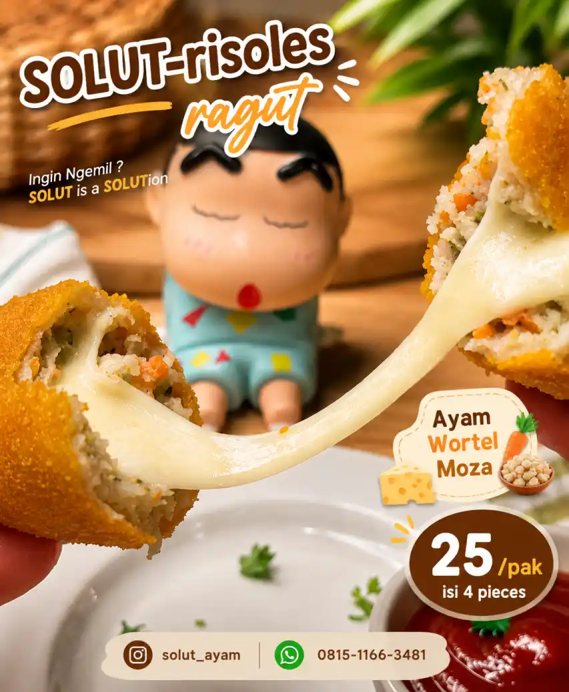

UMKM News
SOLUT Hadirkan Risoles Ragut Ayam Kekinian yang Lumer dan Lezat

Dunia kuliner rumahan kembali diramaikan dengan hadirnya UMKM kreatif bernama SOLUT. Mengusung slogan “SOLUT is a SOLUTion”, brand ini menghadirkan camilan risoles ragut dengan tampilan menggoda dan cita rasa premium yang cocok untuk semua kalangan.
Produk unggulan dari SOLUT adalah varian Ayam Wortel Moza, perpaduan ayam gurih, wortel segar, dan lelehan mozzarella yang melimpah di setiap gigitan. Tekstur renyah di luar dan creamy di dalam menjadi daya tarik utama produk ini.
Selain rasa yang lezat, SOLUT juga menawarkan harga yang terjangkau. Dengan harga sekitar Rp25 ribu per paket isi 4 pieces, pelanggan sudah dapat menikmati camilan premium yang cocok dijadikan teman santai, bekal sekolah, hingga sajian acara keluarga.
Kehadiran SOLUT menunjukkan bagaimana UMKM lokal mampu berkembang melalui inovasi produk, branding yang menarik, dan pemasaran digital melalui media sosial. Visual produk yang estetik serta konsep promosi yang kreatif membuat brand ini semakin dikenal di kalangan pecinta kuliner kekinian.
Dengan kualitas produk yang baik dan konsep usaha yang modern, SOLUT berpotensi menjadi salah satu UMKM kuliner yang terus berkembang dan ikut mendorong pertumbuhan ekonomi kreatif lokal.
Bagi pelanggan yang ingin mencoba lezatnya risoles ragut mozzarella dari SOLUT, pemesanan dapat dilakukan melalui media sosial dan WhatsApp resmi mereka.